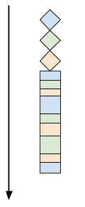

This is part 3 of a series of posts on writing concurrent network servers. Part 1 introduced the series with some building blocks, and part 2 - Threads discussed multiple threads as one viable approach for concurrency in the server.
Another common approach to achieve concurrency is called event-driven programming, or alternatively asynchronous programming [1]. The range of variations on this approach is very large, so we're going to start by covering the basics - using some of the fundamental APIs than form the base of most higher-level approaches. Future posts in the series will cover higher-level abstractions, as well as various hybrid approaches.
All posts in the series:
- Part 1 - Introduction
- Part 2 - Threads
- Part 3 - Event-driven
- Part 4 - libuv
- Part 5 - Redis case study
- Part 6 - Callbacks, Promises and async/await
Blocking vs. nonblocking I/O
As an introduction to the topic, let's talk about the difference between blocking and nonblocking I/O. Blocking I/O is easier to undestand, since this is the "normal" way we're used to I/O APIs working. While receiving data from a socket, a call to recv blocks until some data is received from the peer connected to the other side of the socket. This is precisely the issue with the sequential server of part 1.
So blocking I/O has an inherent performance problem. We saw one way to tackle this problem in part 2, using multiple threads. As long as one thread is blocked on I/O, other threads can continue using the CPU. In fact, blocking I/O is usually very efficient on resource usage while the thread is waiting - the thread is put to sleep by the OS and only wakes up when whatever it was waiting for is available.
Nonblocking I/O is a different approach. When a socket is set to nonblocking mode, a call to recv (and to send, but let's just focus on receiving here) will always return very quickly, even if there's no data to receive. In this case, it will return a special error status [2] notifying the caller that there's no data to receive at this time. The caller can then go do something else, or try to call recv again.
The difference between blocking and nonblocking recv is easiest to demonstrate with a simple code sample. Here's a small program that listens on a socket, continuously blocking on recv; when recv returns data, the program just reports how many bytes were received [3]:
int main(int argc, const char** argv) {
setvbuf(stdout, NULL, _IONBF, 0);
int portnum = 9988;
if (argc >= 2) {
portnum = atoi(argv[1]);
}
printf("Listening on port %d\n", portnum);
int sockfd = listen_inet_socket(portnum);
struct sockaddr_in peer_addr;
socklen_t peer_addr_len = sizeof(peer_addr);
int newsockfd = accept(sockfd, (struct sockaddr*)&peer_addr, &peer_addr_len);
if (newsockfd < 0) {
perror_die("ERROR on accept");
}
report_peer_connected(&peer_addr, peer_addr_len);
while (1) {
uint8_t buf[1024];
printf("Calling recv...\n");
int len = recv(newsockfd, buf, sizeof buf, 0);
if (len < 0) {
perror_die("recv");
} else if (len == 0) {
printf("Peer disconnected; I'm done.\n");
break;
}
printf("recv returned %d bytes\n", len);
}
close(newsockfd);
close(sockfd);
return 0;
}
The main loop repeatedly calls recv and reports what it returned (recall that recv returns 0 when the peer has disconnected). To try it out, we'll run this program in one terminal, and in a separate terminal connect to it with nc, sending a couple of short lines, separated by a delay of a couple of seconds:
$ nc localhost 9988
hello # wait for 2 seconds after typing this
socket world
^D # to end the connection>
The listening program will print the following:
$ ./blocking-listener 9988
Listening on port 9988
peer (localhost, 37284) connected
Calling recv...
recv returned 6 bytes
Calling recv...
recv returned 13 bytes
Calling recv...
Peer disconnected; I'm done.
Now let's try a nonblocking version of the same listening program. Here it is:
int main(int argc, const char** argv) {
setvbuf(stdout, NULL, _IONBF, 0);
int portnum = 9988;
if (argc >= 2) {
portnum = atoi(argv[1]);
}
printf("Listening on port %d\n", portnum);
int sockfd = listen_inet_socket(portnum);
struct sockaddr_in peer_addr;
socklen_t peer_addr_len = sizeof(peer_addr);
int newsockfd = accept(sockfd, (struct sockaddr*)&peer_addr, &peer_addr_len);
if (newsockfd < 0) {
perror_die("ERROR on accept");
}
report_peer_connected(&peer_addr, peer_addr_len);
// Set nonblocking mode on the socket.
int flags = fcntl(newsockfd, F_GETFL, 0);
if (flags == -1) {
perror_die("fcntl F_GETFL");
}
if (fcntl(newsockfd, F_SETFL, flags | O_NONBLOCK) == -1) {
perror_die("fcntl F_SETFL O_NONBLOCK");
}
while (1) {
uint8_t buf[1024];
printf("Calling recv...\n");
int len = recv(newsockfd, buf, sizeof buf, 0);
if (len < 0) {
if (errno == EAGAIN || errno == EWOULDBLOCK) {
usleep(200 * 1000);
continue;
}
perror_die("recv");
} else if (len == 0) {
printf("Peer disconnected; I'm done.\n");
break;
}
printf("recv returned %d bytes\n", len);
}
close(newsockfd);
close(sockfd);
return 0;
}
A couple of notable differences from the blocking version:
- The newsockfd socket returned by accept is set to nonblocking mode by calling fcntl.
- When examining the return status of recv, we check whether errno is set to a value saying that no data is available for receiving. In this case we just sleep for 200 milliseconds and continue to the next iteration of the loop.
The same expermient with nc yields the following printout from this nonblocking listener:
$ ./nonblocking-listener 9988
Listening on port 9988
peer (localhost, 37288) connected
Calling recv...
Calling recv...
Calling recv...
Calling recv...
Calling recv...
Calling recv...
Calling recv...
Calling recv...
Calling recv...
recv returned 6 bytes
Calling recv...
Calling recv...
Calling recv...
Calling recv...
Calling recv...
Calling recv...
Calling recv...
Calling recv...
Calling recv...
Calling recv...
Calling recv...
recv returned 13 bytes
Calling recv...
Calling recv...
Calling recv...
Peer disconnected; I'm done.
As an exercise, add a timestamp to the printouts and convince yourself that the total time elapsed between fruitful calls to recv is more or less the delay in typing the lines into nc (rounded to the next 200 ms).
So there we have it - using nonblocking recv makes it possible for the listener the check in with the socket, and regain control if no data is available yet. Another word to describe this in the domain of programming is polling - the main program periodically polls the socket for its readiness.
It may seem like a potential solution to the sequential serving issue. Nonblocking recv makes it possible to work with multiple sockets simulatenously, polling them for data and only handling those that have new data. This is true - concurrent servers could be written this way; but in reality they don't, because the polling approach scales very poorly.
First, the 200 ms delay I introduced in the code above is nice for the demonstration (the listener prints only a few lines of "Calling recv..." between my typing into nc as opposed to thousands), but it also incurs a delay of up to 200 ms to the server's response time, which is almost certainly undesirable. In real programs the delay would have to be much shorter, and the shorter the sleep, the more CPU the process consumes. These are cycles consumed for just waiting, which isn't great, especially on mobile devices where power matters.
But the bigger problem happens when we actually have to work with multiple sockets this way. Imagine this listener is handling 1000 clients concurrently. This means that in every loop iteration, it has to do a nonblocking recv on each and every one of those 1000 sockets, looking for one which has data ready. This is terribly inefficient, and severely limits the number of clients this server can handle concurrently. There's a catch-22 here: the longer we wait between polls, the less responsive the server is; the shorter we wait, the more CPU resources we burn on useless polling.
Frankly, all this polling also feels like useless work. Surely somewhere in the OS it is known which socket is actually ready with data, so we don't have to scan all of them. Indeed, it is, and the rest of this post will showcase a couple of APIs that let us handle multiple clients much more gracefully.
select
The select system call is a portable (POSIX), venerable part of the standard Unix API. It was designed precisely for the problem described towards the end of the previous section - to allow a single thread to "watch" a non-trivial number of file descriptors [4] for changes, without needlessly spinning in a polling loop. I don't plan to include a comprehensive tutorial for select in this post - there are many websites and book chapters for that - but I will describe its API in the context of the problem we're trying to solve, and will present a fairly complete example.
select enables I/O multiplexing - monitoring multiple file descriptors to see if I/O is possible on any of them.
int select(int nfds, fd_set *readfds, fd_set *writefds,
fd_set *exceptfds, struct timeval *timeout);
readfds points to a buffer of file descriptors we're watching for read events; fd_set is an opaque data structure users manipulate using FD_* macros. writefds is the same for write events. nfds is the highest file descriptor number (file descriptors are just integers) in the watched buffers. timeout lets the user specify how long select should block waiting for one of the file descriptors to be ready (timeout == NULL means block indefinitely). I'll ignore exceptfds for now.
The contract of calling select is as follows:
- Prior to the call, the user has to create fd_set instances for all the different kinds of descriptors to watch. If we want to watch for both read events and write events, both readfds and writefds should be created and populated.
- The user uses FD_SET to set specific descriptors to watch in the set. For example, if we want to watch descriptors 2, 7 and 10 for read events, we call FD_SET three times on readfds, once for each of 2, 7 and 10.
- select is called.
- When select returns (let's ignore timeouts for now), it says how many descriptors in the sets passed to it are ready. It also modifies the readfds and writefds sets to mark only those descriptors that are ready. All the other descriptors are cleared.
- At this point the user has to iterate over readfds and writefds to find which descriptors are ready (using FD_ISSET).
As a complete example, I've reimplemented our protocol in a concurrent server that uses select. The full code is here; what follows is some highlights from the code, with explanations. Warning: this code sample is fairly substantial - so feel free to skip it on first reading if you're short on time.
A concurrent server using select
Using an I/O multiplexing API like select imposes certain constraints on the design of our server; these may not be immediately obvious, but are worth discussing since they are key to understanding what event-driven programming is all about.
Most importantly, always keep in mind that such an approach is, in its core, single-threaded [5]. The server really is just doing one thing at a time. Since we want to handle multiple clients concurrently, we'll have to structure the code in an unusual way.
First, let's talk about the main loop. How would that look? To answer this question let's imagine our server during a flurry of activity - what should it watch for? Two kinds of socket activities:
- New clients trying to connect. These clients should be accept-ed.
- Existing client sending data. This data has to go through the usual protocol described in part 1, with perhaps some data being sent back.
Even though these two activities are somewhat different in nature, we'll have to mix them into the same loop, because there can only be one main loop. Our loop will revolve around calls to select. This select call will watch for the two kinds of events described above.
Here's the part of the code that sets up the file descriptor sets and kicks off the main loop with a call to select:
// The "master" sets are owned by the loop, tracking which FDs we want to
// monitor for reading and which FDs we want to monitor for writing.
fd_set readfds_master;
FD_ZERO(&readfds_master);
fd_set writefds_master;
FD_ZERO(&writefds_master);
// The listenting socket is always monitored for read, to detect when new
// peer connections are incoming.
FD_SET(listener_sockfd, &readfds_master);
// For more efficiency, fdset_max tracks the maximal FD seen so far; this
// makes it unnecessary for select to iterate all the way to FD_SETSIZE on
// every call.
int fdset_max = listener_sockfd;
while (1) {
// select() modifies the fd_sets passed to it, so we have to pass in copies.
fd_set readfds = readfds_master;
fd_set writefds = writefds_master;
int nready = select(fdset_max + 1, &readfds, &writefds, NULL, NULL);
if (nready < 0) {
perror_die("select");
}
...
A couple of points of interest here:
- Since every call to select overwrites the sets given to the function, the caller has to maintain a "master" set to keep track of all the active sockets it monitors across loop iterations.
- Note how, initially, the only socket we care about is listener_sockfd, which is the original socket on which the server accepts new clients.
- The return value of select is the number of descriptors that are ready among those in the sets passed as arguments. The sets are modified by select to mark ready descriptors. The next step is iterating over the descriptors.
...
for (int fd = 0; fd <= fdset_max && nready > 0; fd++) {
// Check if this fd became readable.
if (FD_ISSET(fd, &readfds)) {
nready--;
if (fd == listener_sockfd) {
// The listening socket is ready; this means a new peer is connecting.
...
} else {
fd_status_t status = on_peer_ready_recv(fd);
if (status.want_read) {
FD_SET(fd, &readfds_master);
} else {
FD_CLR(fd, &readfds_master);
}
if (status.want_write) {
FD_SET(fd, &writefds_master);
} else {
FD_CLR(fd, &writefds_master);
}
if (!status.want_read && !status.want_write) {
printf("socket %d closing\n", fd);
close(fd);
}
}
This part of the loop checks the readable descriptors. Let's skip the listener socket (for the full scoop - read the code) and see what happens when one of the client sockets is ready. When this happens, we call a callback function named on_peer_ready_recv with the file descriptor for the socket. This call means the client connected to that socket sent some data and a call to recv on the socket isn't expected to block [6]. This callback returns a struct of type fd_status_t:
typedef struct {
bool want_read;
bool want_write;
} fd_status_t;
Which tells the main loop whether the socket should be watched for read events, write events, or both. The code above shows how FD_SET and FD_CLR are called on the appropriate descriptor sets accordingly. The code for a descriptor being ready for writing in the main loop is similar, except that the callback it invokes is called on_peer_ready_send.
Now it's time to look at the code for the callback itself:
typedef enum { INITIAL_ACK, WAIT_FOR_MSG, IN_MSG } ProcessingState;
#define SENDBUF_SIZE 1024
typedef struct {
ProcessingState state;
// sendbuf contains data the server has to send back to the client. The
// on_peer_ready_recv handler populates this buffer, and on_peer_ready_send
// drains it. sendbuf_end points to the last valid byte in the buffer, and
// sendptr at the next byte to send.
uint8_t sendbuf[SENDBUF_SIZE];
int sendbuf_end;
int sendptr;
} peer_state_t;
// Each peer is globally identified by the file descriptor (fd) it's connected
// on. As long as the peer is connected, the fd is uqique to it. When a peer
// disconnects, a new peer may connect and get the same fd. on_peer_connected
// should initialize the state properly to remove any trace of the old peer on
// the same fd.
peer_state_t global_state[MAXFDS];
fd_status_t on_peer_ready_recv(int sockfd) {
assert(sockfd < MAXFDs);
peer_state_t* peerstate = &global_state[sockfd];
if (peerstate->state == INITIAL_ACK ||
peerstate->sendptr < peerstate->sendbuf_end) {
// Until the initial ACK has been sent to the peer, there's nothing we
// want to receive. Also, wait until all data staged for sending is sent to
// receive more data.
return fd_status_W;
}
uint8_t buf[1024];
int nbytes = recv(sockfd, buf, sizeof buf, 0);
if (nbytes == 0) {
// The peer disconnected.
return fd_status_NORW;
} else if (nbytes < 0) {
if (errno == EAGAIN || errno == EWOULDBLOCK) {
// The socket is not *really* ready for recv; wait until it is.
return fd_status_R;
} else {
perror_die("recv");
}
}
bool ready_to_send = false;
for (int i = 0; i < nbytes; ++i) {
switch (peerstate->state) {
case INITIAL_ACK:
assert(0 && "can't reach here");
break;
case WAIT_FOR_MSG:
if (buf[i] == '^') {
peerstate->state = IN_MSG;
}
break;
case IN_MSG:
if (buf[i] == '$') {
peerstate->state = WAIT_FOR_MSG;
} else {
assert(peerstate->sendbuf_end < SENDBUF_SIZE);
peerstate->sendbuf[peerstate->sendbuf_end++] = buf[i] + 1;
ready_to_send = true;
}
break;
}
}
// Report reading readiness iff there's nothing to send to the peer as a
// result of the latest recv.
return (fd_status_t){.want_read = !ready_to_send,
.want_write = ready_to_send};
}
A peer_state_t is the full state object used to represent a client connection between callback calls from the main loop. Since a callback is invoked on some partial data sent by the client, it cannot assume it will be able to communicate with the client continuously, and it has to run quickly without blocking. It never blocks because the socket is set to non-blocking mode and recv will always return quickly. Other than calling recv, all this handler does is manipulate the state - there are no additional calls that could potentially block.
An an exercise, can you figure out why this code needs an extra state? Our servers so far in the series managed with just two states, but this one needs three.
Let's also have a look at the "socket ready to send" callback:
fd_status_t on_peer_ready_send(int sockfd) {
assert(sockfd < MAXFDs);
peer_state_t* peerstate = &global_state[sockfd];
if (peerstate->sendptr >= peerstate->sendbuf_end) {
// Nothing to send.
return fd_status_RW;
}
int sendlen = peerstate->sendbuf_end - peerstate->sendptr;
int nsent = send(sockfd, &peerstate->sendbuf[peerstate->sendptr], sendlen, 0);
if (nsent == -1) {
if (errno == EAGAIN || errno == EWOULDBLOCK) {
return fd_status_W;
} else {
perror_die("send");
}
}
if (nsent < sendlen) {
peerstate->sendptr += nsent;
return fd_status_W;
} else {
// Everything was sent successfully; reset the send queue.
peerstate->sendptr = 0;
peerstate->sendbuf_end = 0;
// Special-case state transition in if we were in INITIAL_ACK until now.
if (peerstate->state == INITIAL_ACK) {
peerstate->state = WAIT_FOR_MSG;
}
return fd_status_R;
}
}
Same here - the callback calls a non-blocking send and performs state manipulation. In asynchronous code, it's critical for callbacks to do their work quickly - any delay blocks the main loop from making progress, and thus blocks the whole server from handling other clients.
Let's once again repeat a run of the server with the script that connects 3 clients simultaneously. In one terminal window we'll run:
$ ./select-server
In another:
$ python3.6 simple-client.py -n 3 localhost 9090
INFO:2017-09-26 05:29:15,864:conn1 connected...
INFO:2017-09-26 05:29:15,864:conn2 connected...
INFO:2017-09-26 05:29:15,864:conn0 connected...
INFO:2017-09-26 05:29:15,865:conn1 sending b'^abc$de^abte$f'
INFO:2017-09-26 05:29:15,865:conn2 sending b'^abc$de^abte$f'
INFO:2017-09-26 05:29:15,865:conn0 sending b'^abc$de^abte$f'
INFO:2017-09-26 05:29:15,865:conn1 received b'bcdbcuf'
INFO:2017-09-26 05:29:15,865:conn2 received b'bcdbcuf'
INFO:2017-09-26 05:29:15,865:conn0 received b'bcdbcuf'
INFO:2017-09-26 05:29:16,866:conn1 sending b'xyz^123'
INFO:2017-09-26 05:29:16,867:conn0 sending b'xyz^123'
INFO:2017-09-26 05:29:16,867:conn2 sending b'xyz^123'
INFO:2017-09-26 05:29:16,867:conn1 received b'234'
INFO:2017-09-26 05:29:16,868:conn0 received b'234'
INFO:2017-09-26 05:29:16,868:conn2 received b'234'
INFO:2017-09-26 05:29:17,868:conn1 sending b'25$^ab0000$abab'
INFO:2017-09-26 05:29:17,869:conn1 received b'36bc1111'
INFO:2017-09-26 05:29:17,869:conn0 sending b'25$^ab0000$abab'
INFO:2017-09-26 05:29:17,870:conn0 received b'36bc1111'
INFO:2017-09-26 05:29:17,870:conn2 sending b'25$^ab0000$abab'
INFO:2017-09-26 05:29:17,870:conn2 received b'36bc1111'
INFO:2017-09-26 05:29:18,069:conn1 disconnecting
INFO:2017-09-26 05:29:18,070:conn0 disconnecting
INFO:2017-09-26 05:29:18,070:conn2 disconnecting
Similarly to the threaded case, there's no delay between clients - they are all handled concurrently. And yet, there are no threads in sight in select-server! The main loop multiplexes all the clients by efficient polling of multiple sockets using select. Recall the sequential vs. multi-threaded client handling diagrams from part 2. For our select-server, the time flow for three clients looks something like this:
All clients are handled concurrently within the same thread, by multiplexing - doing some work for a client, switching to another, then another, then going back to the original client, etc. Note that there's no specific round-robin order here - the clients are handled when they send data to the server, which really depends on the client.
Synchronous, asynchronous, event-driven, callback-based
The select-server code sample provides a good background for discussing just what is meant by "asynchronous" programming, and how it relates to event-driven and callback-based programming, because all these terms are common in the (rather inconsistent) discussion of concurrent servers.
Let's start with a quote from select's man page:
select, pselect, FD_CLR, FD_ISSET, FD_SET, FD_ZERO - synchronous I/O multiplexing
So select is for synchronous multiplexing. But I've just presented a substantial code sample using select as an example of an asynchronous server; what gives?
The answer is: it depends on your point of view. Synchronous is often used as a synonym for blocking, and the calls to select are, indeed, blocking. So are the calls to send and recv in the sequential and threaded servers presented in parts 1 and 2. So it is fair to say that select is a synchronous API. However, the server design emerging from the use of select is actually asynchronous, or callback-based, or event-driven. Note that the on_peer_* functions presented in this post are callbacks; they should never block, and they get invoked due to network events. They can get partial data, and are expected to retain coherent state in-between invocations.
If you've done any amont of GUI programming in the past, all of this is very familiar. There's an "event loop" that's often entirely hidden in frameworks, and the application's "business logic" is built out of callbacks that get invoked by the event loop due to various events - user mouse clicks, menu selections, timers firing, data arriving on sockets, etc. The most ubiquitous model of programming these days is, of course, client-side Javascript, which is written as a bunch of callbacks invoked by user activity on a web page.
The limitations of select
Using select for our first example of an asynchronous server makes sense to present the concept, and also because select is such an ubiquitous and portable API. But it also has some significant limitations that manifest when the number of watched file descriptors is very large:
- Limited file descriptor set size.
- Bad performance.
Let's start with the file descriptor size. FD_SETSIZE is a compile-time constant that's usually equal to 1024 on modern systems. It's hard-coded deep in the guts of glibc, and isn't easy to modify. It limits the number of file descriptors a select call can watch to 1024. These days folks want to write servers that handle 10s of thousands of concurrent clients and more, so this problem is real. There are workarounds, but they aren't portable and aren't easy.
The bad performance issue is a bit more subtle, but still very serious. Note that when select returns, the information it provides to the caller is the number of "ready" descriptors, and the updated descriptor sets. The descriptor sets map from descriptor to "ready/not ready" but they don't provide a way to iterate over all the ready descriptors efficiently. If there's only a single descriptor that is ready in the set, in the worst case the caller has to iterate over the entire set to find it. This works OK when the number of descriptors watched is small, but if it gets to high numbers this overhead starts hurting [7].
For these reasons select has recently fallen out of favor for writing high-performance concurrent servers. Every popular OS has its own, non-portable APIs that permit users to write much more performant event loops; higher-level interfaces like frameworks and high-level languages usually wrap these APIs in a single portable interface.
epoll
As an example, let's look at epoll, Linux's solution to the high-volume I/O event notification problem. The key to epoll's efficiency is greater cooperation from the kernel. Instead of using a file descriptor set, epoll_wait fills a buffer with events that are currently ready. Only the ready events are added to the buffer, so there is no need to iterate over all the currently watched file descriptors in the client. This changes the process of discovering which descriptors are ready from O(N) in select's case to O(1).
A full presentation of the epoll API is not the goal here - there are plenty of online resources for that. As you may have guessed, though, I am going to write yet another version of our concurrent server - this time using epoll instead of select. The full code sample is here. In fact, since the vast majority of the code is the same as select-server, I'll only focus on the novelty - the use of epoll in the main loop:
struct epoll_event accept_event;
accept_event.data.fd = listener_sockfd;
accept_event.events = EPOLLIN;
if (epoll_ctl(epollfd, EPOLL_CTL_ADD, listener_sockfd, &accept_event) < 0) {
perror_die("epoll_ctl EPOLL_CTL_ADD");
}
struct epoll_event* events = calloc(MAXFDS, sizeof(struct epoll_event));
if (events == NULL) {
die("Unable to allocate memory for epoll_events");
}
while (1) {
int nready = epoll_wait(epollfd, events, MAXFDS, -1);
for (int i = 0; i < nready; i++) {
if (events[i].events & EPOLLERR) {
perror_die("epoll_wait returned EPOLLERR");
}
if (events[i].data.fd == listener_sockfd) {
// The listening socket is ready; this means a new peer is connecting.
...
} else {
// A peer socket is ready.
if (events[i].events & EPOLLIN) {
// Ready for reading.
...
} else if (events[i].events & EPOLLOUT) {
// Ready for writing.
...
}
}
}
}
We start by configuring epoll with a call to epoll_ctl. In this case, the configuration amounts to adding the listening socket to the descriptors epoll is watching for us. We then allocate a buffer of ready events to pass to epoll for modification. The call to epoll_wait in the main loop is where the magic's at. It blocks until one of the watched descriptors is ready (or until a timeout expires), and returns the number of ready descriptors. This time, however, instead of blindly iterating over all the watched sets, we know that epoll_write populated the events buffer passed to it with the ready events, from 0 to nready-1, so we iterate only the strictly necessary number of times.
To reiterate this critical difference from select: if we're watching 1000 descriptors and two become ready, epoll_waits returns nready=2 and populates the first two elements of the events buffer - so we only "iterate" over two descriptors. With select we'd still have to iterate over 1000 descriptors to find out which ones are ready. For this reason epoll scales much better than select for busy servers with many active sockets.
The rest of the code is straightforward, since we're already familiar with select-server. In fact, all the "business logic" of epoll-server is exactly the same as for select-server - the callbacks consist of the same code.
This similarity is tempting to exploit by abstracting away the event loop into a library/framework. I'm going to resist this itch, because so many great programmers succumbed to it in the past. Instead, in the next post we're going to look at libuv - one of the more popular event loop abstractions emerging recently. Libraries like libuv allow us to write concurrent asynchronous servers without worrying about the greasy details of the underlying system calls.
| [1] | I tried enlightening myself on the actual semantic difference between the two by doing some web browsing and reading, but got a headache fairly quickly. There are many different opinions ranging from "they're the same thing", to "one is a subset of another" to "they're completely different things". When faced with such divergent views on the semantics, it's best to abandon the issue entirely, focusing instead on specific examples and use cases. |
| [2] | POSIX mandates that this can be either EAGAIN or EWOULDBLOCK, and portable applications should check for both. |
| [3] | Similarly to all C samples in this series, this code uses some helper utilities to set up listening sockets. The full code for these utilities lives in the utils module in the repository. |
| [4] | select is not a network/socket-specific function; it watches arbitrary file descriptors, which could be disk files, pipes, terminals, sockets or anything else Unix systems represent with file descriptors. In this post we're focusing on its uses for sockets, of course. |
| [5] | There are ways to intermix event-driven programming with multiple threads, but I'll defer this discussion to later in the series. |
| [6] | Due to various non-trivial reasons it could still block, even after select says it's ready. Therefore, all sockets opened by this server are set to nonblocking mode, and if the call to recv or send returns EAGAIN or EWOULDBLOCK, the callbacks just assumed no event really happened. Read the code sample comments for more details. |
| [7] | Note that this still isn't as bad as the asynchronous polling example presented earlier in the post. The polling has to happen all the time, while select actually blocks until one or more sockets are ready for reading/writing; far less CPU time is wasted with select than with repeated polling. |